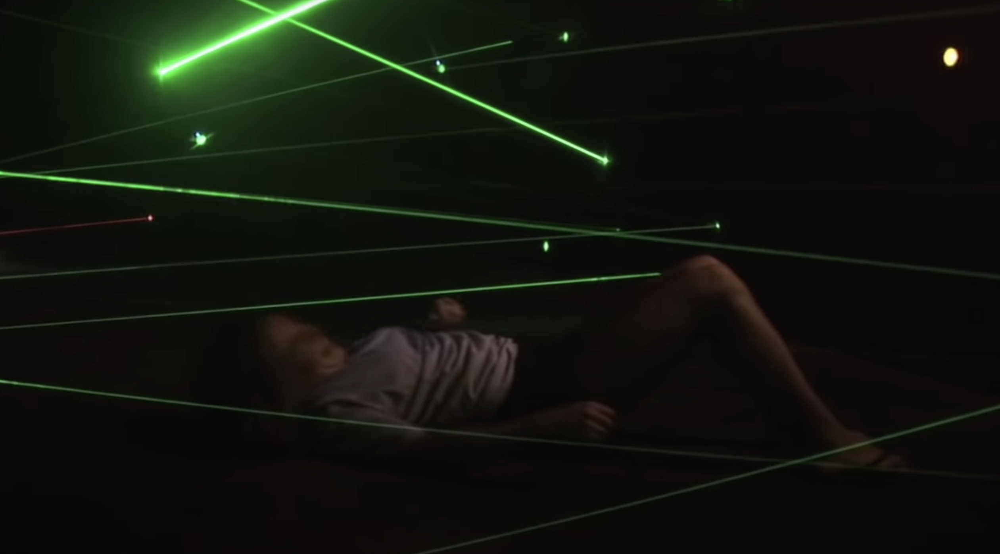
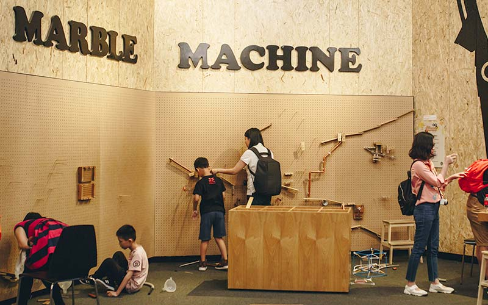

3D Printing the Future
Imagine a world without limits, where any object can be produced at the drop of a hat
Recent advances in 3D printing mean that more people than ever can make their ideas real.
This burst of creativity has created millions of interesting things –
some of them could even change your life.
No wonder 3D printing is always in the news. But are the stories accurate or even true?
Date: Permanent
Location: Level 2
Recommended Time: 15 minutes
Back
Butterflies Up-Close

Go on an immersive journey through the stages of butterfly metamorphosis.
Experience the fascinating transformation of a butterfly from an egg to a beautiful winged adult.
With only around 1 in 20 eggs making it to adulthood, the butterfly is met with numerous dangers and
threats during each stage of its life cycle.
You will get to gain a deeper insight into how the butterfly behaves, interacts with its surroundings,
and survives each stage of its life cycle to reach adulthood.
Date: Permanent
Location: Hall D
Recommended Time: 45 - 60 minutes
Back
Dialogue With Time - Embracing Ageing
Reconsider how you understand old age by learning more about the ageing process with our senior guides..
This fully-guided experience is facilitated by retirees who will lead you through,
explaining the exhibits and starting discussions on some of the stereotypes or assumptions around old age.
Other interactive exhibits within the exhibition also allow you
to experience and understand more about the ageing process and reconsider your perception of age.
Date: Permanent
Location: Hall B, Mezzanine
Recommended Time: 60 - 90 minutes
Back
E3 - Emmersive Experiential Environments
Immerse yourself in your some of the latest visualisation technologies on this journey from the ends of the universe to the recesses of our brains.
E-mmersive Experiential Environments is an immersive exhibition featuring virtual reality headsets and 3D 360-degree environments.
Using this technology, you will be taken on a journey to the outer reaches of the known universe,
and into the deep recesses of the human brain.
Date: Permanent
Location: Hall C
Recommended Time: 30 - 45 minutes
Back
Earth Alive

The Earth is constantly changing. Some changes are incremental, some are split-second, but both can result in violent events that devastate human communities.
Experience Earth Alive, where you can encounter forces and processes that underlie Earth's changes.
Through active, engaging exhibits and compelling visual displays, get a feel for some of Earth’s physical functionings!
The exhibits are organised into spheres that reflect Earth sciences and systems – Geosphere, Hydrosphere and Atmosphere.
Each of these spheres looks at how Earth changes can manifest in the environment, causing phenomena such as earthquakes,
tsunamis, mountain-building and rock strata, and volcanic eruptions. A fourth section,
the Human Sphere, places people into the picture to highlight how Earth changes impact our lives in
critical ways and how we can affect the Earth and respond to such changes.
Date: Permanent
Location: Hall B
Recommended Time: 60 minutes
Back
Ecogarden

Explore our living laboratory of plants and animals in their habitats. See how they live in an environment that we have kept as natural as possible.
The Ecogarden, short for ecology garden, is a living outdoor laboratory. The plants here receive no special care.
No attempt is made to control pests except for occasional pruning, mowing and necessary replanting.
This provides an excellent setting for ecological studies. From our local king of fruits, the durian,
to the common vegetables that you get in the market, take a walk around nature and discover more about the
plants that you commonly see.
Date: Permanent
Location: Through Hall D
Recommended Time: 30 - 60 minutes
Back
Energy Story
From natural cycles to modern applications, explore the sources, transformations and uses of energy at our latest exhibition!
Energy is all around us. While we might often find it difficult to visualise energy, humankind has learnt how to harness energy for work.
Jointly presented by Science Centre Singapore, the Energy Market Authority and SP Group, the Energy Story exhibition captures the story
of how humankind has progressed off the back of energy discovery, and must now work towards a cleaner, more sustainable future.
The exhibition features six zones of multimedia displays and interactives where visitors can learn about the sources,
transformation and uses of energy, from natural cycles to modern applications.
There are also exhibits featuring Singapore's own energy sector, raising awareness of our four energy switches
and how we are working towards a greener energy mix. The exhibition also addresses our responsibility as energy consumers,
presenting a vision of a clean and energy-efficient future.
Date: Permanent
Location: Hall B
Recommended Time: 40 minutes
Back
Fire
What happens when something burns? How to matches, lighters and firecrackers work? How does nature depend on fire? Find your answers here!
Fire has had a great impact throughout the history of civilisation - from campfires to oil lamps and smoke signals, to flame throwers. This exhibition on all of this and more.
Date: Permanent
Location: Courtyard
Recommended Time: 15 - 30 minutes
Back
Future Makers
Engineering, the academic subject and vocation, is much more than what it used to be.
Remember... Engineers create the world that never has been! - Theodore von Karman
Learn the scope modern engineering offers to individuals and to society – from being highly specialized to highly specialized with multi-disciplinary,
inter-disciplinary, and cross-disciplinary collaborations, from the traditional, conventional divisions to including biomedical, nanotech materials fields.
Date: Permanent
Location: Level 2 - Hall G
Recommended Time: 45 - 60 minutes
Back
Kinetic Garden
Discover the inter-relationship among forms of energy through interactive exhibits
Our Science Centre welcome begins at the Kinetic Garden, where you can discover the
inter-relationship among forms of energy and more through interactive exhibits such as
the Magic Swing, a Sundial and a Lithophone.
The Kinetic Garden is a unique outdoor exhibition which demonstrates certain scientific
principles and phenomena that would be difficult to create in an indoor setting.
Date: Permanent
Location: Entrance
Recommended Time: 30 - 60 minutes
Back
Know Your Poo
Know Your Poo is a seriously fun exhibition that touches on the topics of human waste, toilets, and sanitation!
As you wind your way through the exhibition, you will discover how and why we need to poo. You also learn about the history and evolution of sanitation and toilets.
The exhibition also highlights the urgent issue of the global divide. It then shows how engineering solutions might answer
some of these challenges. Know Your Poo serves as a reminder that we all need to pay attention to the importance of providing
good sanitation and practising good habits in order to safeguard our health and be a better society.
Date: Permanent
Location: Hall B
Recommended Time: 15 - 30 minutes
Back
Laser Maze Challenge

Are you quick on your feet and up for a challenge? Harness your inner Ninja and
test your reflexes as you race against time to manoeuvre through a dense field of laser beams.
Step into a completely dark arena with more than 50 laser beams. Your mission is to navigate the maze
and complete it without coming into contact with any laser beam. Jumping, hopping, crawling, moving with
your back against the floor… The laser maze challenge puts your agility and reflexes to the test!
Date: Permanent
Location: Hall A
Recommended Time: 15 - 20 minutes
Please Note: $5 for 2 runs
Back
Phobia2 : The Science of Fear
Face your fears in an exciting journey of self-discovery. Understanding and managing fear can be entertaining!
Welcome to the award-winning exhibition that explores the topic of fear, from its historical and cultural significance
to the psychology and physiology of fear and how it affects our daily lives. Be prepared for something different and
perhaps learn to better manage your own fears!
Date: Permanent
Location: Hall B
Recommended Time: 45 - 60 minutes
Back
Professor Crackitt's Light Fantastic Mirror Maze
Welcome to Professor Crackitt’s light and mirror laboratory! Can you get through his maze of infinite reflections and endless hallways?
Welcome to Professor Crackitt’s laboratory – a life-size labyrinth of mirrors, filled with infinite reflections and endless hallways.
Help Professor Crackitt to find his pet parrot – Wattnot – who has gotten lost in the vast laboratory.
Will you be able to find your way through the identical corridors that seem to loop back confusingly on themselves?
As you stop to re-orientate yourself on your journey, be sure to check out the Professor’s numerous whimsical inventions.
Just be careful not to run into yourself on your way out!
Date: Permanent
Location: Hall A
Recommended Time: 30 minutes
Back
Scientist for a Day
Discover-it-yourself laboratory, educational and fun-filled activity in Singapore!
Be a scientist for a day at our discover-it-yourself laboratory! Move through the stages of the Scientific Method
guided by our facilitators, volunteers and, when available, guest scientists.
Date: Permanent
Location: Hall A
Recommended Time: 30+ minutes
Please Note: Facilitated Sessions
Back
Singapore Innovations - From Ideas to Creations

What inspired the Singaporean innovations that have made their mark in the world? How did the innovators move from ideation to realisation?
Find out about the science and engineering behind singaporean innovations – and explore each journey from ideation to realisation.
Date: Permanent
Location: Level 2
Recommended Time: 30 minutes
Back
The Giant Zoetrope
Watch the giant zoetrope seem to come to life before your very eyes!
Once the zoetrope starts to spin and the strobe lights flash, our brain is ‘tricked’ into interpreting
the 3D individual static images as a single moving image and thus the zoetrope appears to come to life
before our own eyes!
Date: Permanent
Location: Hall A
Recommended Time: 15 - 30 minutes
Please Note: Strobe lighting is used in this exhibit
Back
The Mind's Eye
Do you believe what you see? Think again! Our exhibition is curated to inspire you with a fresh perspective.
View exhibits of various optical illusions and see how things may not always be the way they appear.
Date: Permanent
Location: Entrance Hall
Recommended Time: 30 minutes
Back
The Tinkering Studio

Find new ways to use familiar and unfamiliar materials, through the trial and error process, and be amazed by your very own creations.
The Loopy Rope lets you twist the motor and watch the rope move in interesting ways
The Wind Table is a place to make your own light weight designs using various materials and watch how they swirl, lift and glide over the wind table! It's the most fun way to learn how the wind can create lift!
Date: Permanent
Location: Hall E
Recommended Time: 30 - 60 minutes
Back
Urban Mutations
Explore the changing face of cities. What is your city like? What kind of cities do we want?
Cities are growing at a meteoric rate in our increasingly globalized world. Examine urban changes from a functional,
technological, and sociological angle. What is the state of knowledge and representation of cities today?
What are some examples of current or planned innovations and initiatives in response to issues facing urban ecosystems?
Through this exhibition, visitors are encouraged to reflect on the approach to cities at the beginning of the 21st century.
Date: Permanent
Location: Hall A
Recommended Time: 30 - 45 minutes
Back